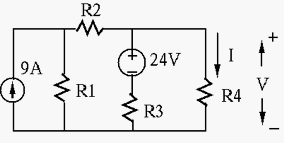

In class, open notes, feel free to use a calculator, but not any software package
such as Multisim.
Mark your name and question number clearly on top of each page.
Indicate the total number of pages submitted.
When solving a problem, list all the steps. In each step, indicate
concisely what you are doing in English, then show the calculation
and the result of for the step. Box the final answer.
A final answer, even if correct, without evidence of the steps
leading to it will receive ZERO credit.
Problem 1. (40 points)
Find voltage and current as labeled in the following figure:

where , , , .
Problem 2. (60 pts)
Find all six currents labeled as through in the figure, where
, , , and .